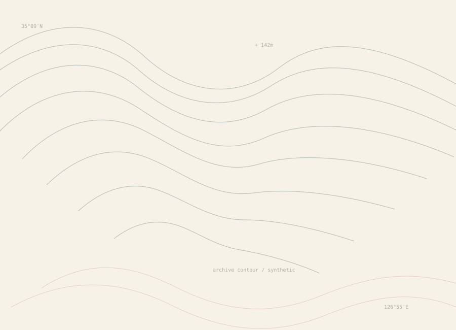
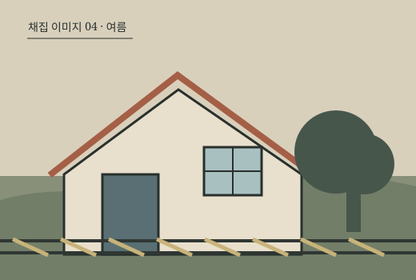
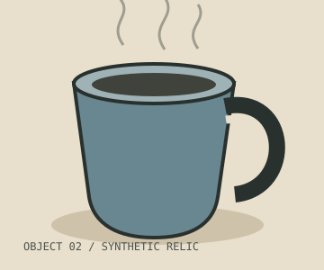

2021.05 · 장소
정원 문 앞
처음 오래 이야기한 곳. 닫힌 문보다 담장 너머의 나무를 기억함.
Business 07 · Phase 1 · UI Only
Personal Meaning Map — an intimate atlas of lived significance
01 · Today’s atlas sheet
2026년 7월의 기록 조각 12개 가운데, 지금 가장 크게 남아 있는 군집을 한 장의 지도책 면처럼 편집했습니다.

집, 한 사람, 비가 오던 오후, 오래 쓴 찻잔이 같은 계절의 감각으로 모였습니다.

